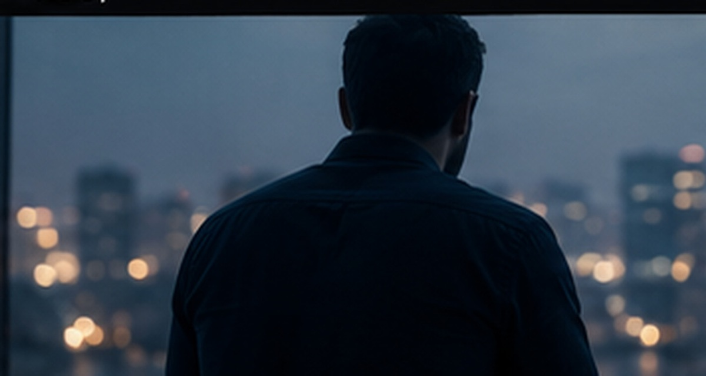

Recognise
Name the state before it takes over.

For organisations
Pressure changes what people can reach. SafeRise helps them recognise their state, regulate it, and get their judgement back.
Private access for each person. Shared sessions for the team. Nothing individual reported to leadership.
The operating layer
Frameworks and leadership models assume attention is available. SafeRise works one layer earlier: the state a person is in while the moment is happening.
Name the state before it takes over.
Breath, attention and somatic tools, matched to the state.
Return with room to judge what is really there.
Pressure doesn’t disappear. This is a repeatable way to meet it, without the most activated part of you making every decision.
The model
SafeRise trains one capability, respects what it physically depends on, and follows it into the situations where it matters. Most workplace programmes begin at the third layer.
Every protocol carries guidance for the state around the substrate, not a plan for the substrate itself. What to do with the mind that will not close. What the reach at eleven at night is actually asking for. How to walk back into training after the week you missed.
No diets, no programmes, no targets. Where the problem is deficiency or injury rather than state, the guidance routes outward.
The guided session runs the same four steps every time — recognise the state, regulate it, release the struggle, return to deliberate response. Around it sits the explanation, the interpretive perspectives, the cue card for the live moment, and language for telling someone else what is happening.
The capacity beneath every skill a person has already learned, and the one almost nothing else addresses.
Guidance for the situation itself — what to say before the conversation you have been avoiding, how to hold a decision when judgement has gone, what to do with the half-second of editing before you speak, and how to leave a shift without carrying it home.
Where recovered choice becomes visible to everyone except the person who recovered it.
The movement runs both ways. Depleted capacity can shape decisions that further damage recovery. SafeRise works at the point where a person can interrupt that loop.
The gap
EAPs, coaching and training can all be valuable. But each assumes that a person can still access reflection, language and judgement when pressure arrives.
Knowledge, policy, coaching and technical skill are already present.
Activation narrows attention, interpretation and the range of available responses.
The cost can travel into the next decision, relationship, shift or night of recovery.
SafeRise does not replace existing support. It helps make more of it reachable when state is the barrier.
One method, two spaces
The organisation can create the conditions and fund access. The person keeps ownership of what happens inside their account.
The shared space
The private space
The impact pathway
SafeRise supports state recognition and regulation. What follows is a pathway to evaluate, not a promise of outcomes.
Near the moment, without disclosure or pressure.
Earlier recognition, regulation and recovery.
Pause. Judge. Communicate. Repair. Return.
Reviewed ethically, at an aggregate level.
Can people pause and respond, rather than react?
Does support feel usable before strain escalates?
Can people regain focus after disruption?
Does the environment hold when pressure is high?
Can repair happen earlier?
Measure the environment, not the individual. Use existing aggregate people and performance measures, optional anonymous pulse questions and qualitative learning. Do not turn private protocol use into a productivity score or expose named activity.
The base
The nurse who slept four hours, the account manager rehearsing a call they have been avoiding, the specialist whose judgement is available to them everywhere except the meeting where it counts — the training is not missing. Access to it is. Which is why these eight do not vary: the states that cost you most are not department-specific. Buying support one department at a time leaves the rest of the organisation outside it, and each group speaking a language the next one does not. These eight are the part everybody holds in common, and they reach past the desk — into sleep, into food, and into what people carry in on Monday and carry home again on Friday.
The same four steps in every department.
A manager and the person they manage describe what happened using the same words, so the conversation starts further along than it otherwise would.
Everyone is inside it from day one.
No list to draw up and no manager deciding who qualifies, which removes the one step people are least willing to take.
You fund access. They own what happens inside it.
Journal entries and individual protocol choices are never visible to an employer — which is the condition under which people use it honestly enough for it to work.
Every track carries the same shared resources: guided practice, cue cards, expert insights, safe practice, private journaling and progress reporting, decision support, and communication and repair resources.
The two that vary
A ward at three in the morning and a trading floor at close do not put people under the same kind of pressure, and a first-time manager is carrying something an individual contributor never had to. So the last two protocols are matched to the responsibility someone holds and the environment they hold it in. What arrives recognises the shift they just finished — which is the difference between a resource people open and one they scroll past.
Every department can be answered specifically without briefing a separate vendor, scheduling a separate session, or asking your team to learn a second system.
The library
Fourteen protocols for responsibility, sixteen for environment — one library, one invoice, nothing for your team to administer. Each one names situations that particular job actually produces: the handover, the escalation, the client who will not be satisfied, the decision made while depleted, the thing said to a colleague that now has to be repaired.
Select any one to see what it covers and who it is for.
The complete curriculum
The industry route surfaces what is most likely to matter first. It does not reduce access. Every organisational member can use the complete cross-industry curriculum.
Included for every member
Workplace strain does not stay neatly at work, and personal state does not disappear at the office door. The full curriculum keeps those realities connected.
States that arise within the person: anxiety, anger, overwhelm, grief, shame and shutdown.

What becomes available when survival is no longer consuming the whole budget.
Conflict, trust, distance, repair and the patterns that keep repeating between people.

The states around eating, nourishment and the body's relationship with fuel.

Training, rest, interruption and the nervous-system work of returning.
The state you are in at eleven, at three, at seven — not a sleep schedule.
Pressure, visibility, judgement, belonging, decision load and burnout.

Authority, transition, visibility and holding responsibility without losing access to self.
The 8 + 2 model
The person is not the job. The role is not the industry. SafeRise separates the three so personalisation comes from context, not from duplicating the same content under different names.
+1Role / function
Responsibility, cognitive load, authority, scrutiny, rejection, precision, vigilance, dependency, performance cycles and repeated interpersonal demand.
+1Industry
Operational rhythm, service pressure, public contact, emergency exposure, safety consciousness, sensory demand, shifts, disruption and competition.
How it combines
The development rule. If a resource still works almost unchanged after the role or industry name is replaced, it belongs in the Foundation 8. B2B content exists only where the work context genuinely changes the experience.
What people receive
Organisational access uses the same core method as individual membership. You add two things to it from the outside — and nothing comes back out.
A live session gives the team one shared reference point — with nobody asked to disclose anything.
The states that match your environment surface first — without removing the wider library.
Guided audio, video and resources organised around what is happening now — not a course with a finish line.
The full current library, your industry route, and scheduled series as they arrive — private journals and records included.
Two things go in. Nothing comes out. You choose the route and you call the room. What any one person opens, writes or returns to stays inside — not withheld from you by policy, but never collected in the first place.
Delivery
Map the workforce, recurring strain, existing support and the boundary of self-guided work.
A remote or in-person session teaches the method through experience, not a slide deck.
Members use the platform in their own time, with private records and a selected guide voice.
Follow-up sessions revisit the process without turning private use into management data.
Ways to work together
No inflated transformation promise and no forced multi-year ladder. Begin with a live format, annual access, or a scoped combination of the two.
A founder-led format shaped around the audience and the environment.
Remote or in person. Short intake and boundaries agreed first. Travel and venue excluded.
Discuss a session →One company-wide route into the complete available library, used privately on each person’s own device.
Priced on total headcount. The rate per person falls as the organisation grows, and each rate applies only to the people it covers.
Ask about your rate →Repeated shared contact alongside private platform access.
Columns one and two, priced as one engagement rather than two invoices.
Shape the programme →From a breakout room to a festival programme or a stage session — shaped to the audience rather than forced into the retreat format.
Not a rung on the ladder — a separate line of work with its own scoping.
Enquire →Start with a session or a short pilot. Learn whether the language lands, and what requires adaptation, before widening access.
Data, scope & trust
A nervous-system resource cannot be credible at work if using it creates a second risk: being watched, scored or interpreted by the employer.
No names, session history or activity supplied to leadership. We do not report on individuals. Not their usage, not their activity, not whether they opened anything. Not to you, and not on request.
What somebody writes is not an organisational record.
No leaderboard, completion pressure or wellbeing metric.
SafeRise does not screen, label or assess anybody.
It sits alongside professional support and routes outward when needed.
Results are not claimed before they are measured.
Good fit
A recurring pressure, leadership willing to protect private use, and a desire to connect a live introduction with something people can return to.
Not a fit
A motivational keynote only, named reporting on employee behaviour, or a need for clinical or emergency support.
Procurement questions
The first conversation should establish fit and boundaries before rollout.
No. It is self-guided regulation and coaching. It does not diagnose, assess or replace clinical care, an EAP or emergency support.
Depending on scope: platform access, a live introduction, facilitated sessions and context-led curation. Individual records remain private.
No. Named activity, journal content and protocol history are not supplied to leadership.
Yes, through curation and delivery. A genuinely new specialist format is treated as design work. Higher-risk contexts require governance.
Both. Platform use is self-guided; facilitated work can be remote or delivered at an office, retreat, conference or hosted event.
With the workforce, pressure point and boundary. One session or pilot can establish fit before wider access.
Next step
Tell us who the programme is for, what their working day asks of them, and what support already exists. We will tell you where SafeRise fits, where it does not, and what should happen first.
Contact SafeRise